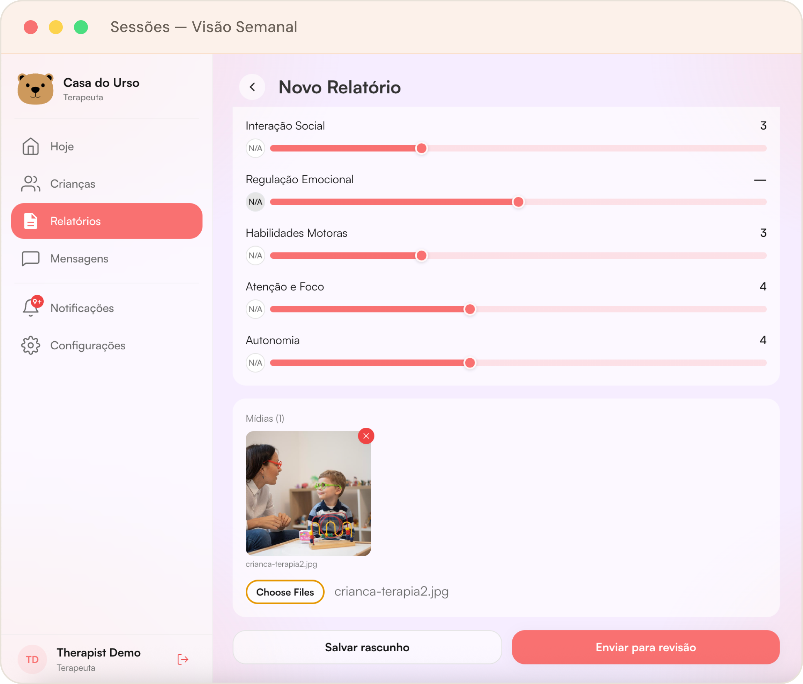
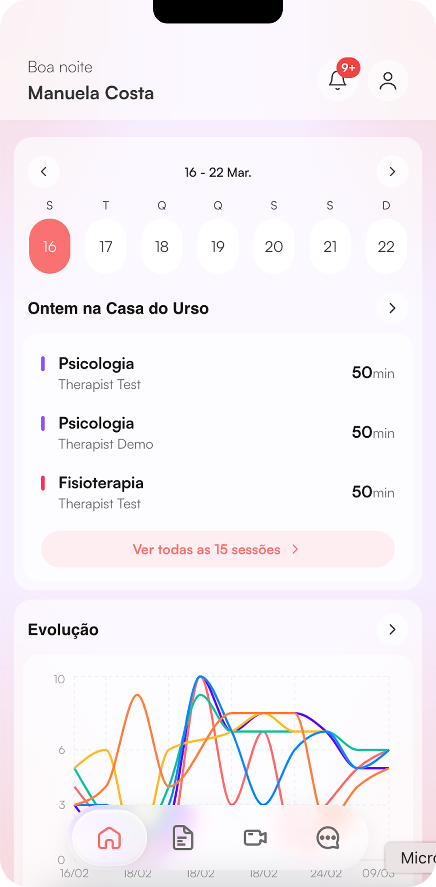

Pré-Seed · 2025
Construímos uma clínica.
Então encontramos
o problema real.
A Casa do Urso é a infraestrutura que conecta terapeutas, clínicas, escolas e famílias nascida de dentro do problema.
1 ano
Operando como clínica real
Laboratório
1.246
famílias buscaram atendimento nos últimos 12 meses
104/mês
R$1,5M
Captação pré-seed
Aberto
A Fundadora
"
Eu não me propus a construir uma startup. Eu me propus a ajudar crianças. O problema era tão grande que a startup foi inevitável.
M
Manu Costa
Fundadora & CEO, Casa do Urso
Clínica como laboratório
Não vendemos para o mercado. Nós somos o mercado. A clínica revelou o problema de dentro para fora.
Founder-problem fit real
Manuela viveu a dor como gestora. Não é hipótese é diagnóstico.
Produto e clínica juntos
A plataforma é construída em cima de operações reais. Cada feature foi validada com pacientes reais.
O Problema
Cuidado fragmentado.
Dados espalhados.
Terapeutas
Clínicas
Escolas
Pais
PDFs e Relatórios
Sistemas desconectados
?
Consequências
Impossível coordenar terapias entre profissionais
Progresso de desenvolvimento invisível
Insights não são compartilhados entre equipes
Decisões de tratamento sem dados estruturados
A Solução
Uma plataforma compartilhada
para coordenar o cuidado.
Stakeholders
Terapeutas
Clínicas
Escolas
Famílias
Plataforma
Casa do Urso
Coordenação centralizada do cuidado
Resultados
Dados Clínicos
Progresso
Clínicas gerenciam perfis e protocolos na plataforma
Terapeutas registram sessões e progresso em tempo real
Escolas acompanham o desenvolvimento integrado
Famílias recebem visibilidade completa do cuidado
A Casa do Urso se torna o sistema central onde o cuidado de neurodesenvolvimento é coordenado e registrado.
A Descoberta
Uma criança.
5+ profissionais. Zero coordenação.
Psicólogos
Terapia comportamental
Fonoaudiólogos
Linguagem e comunicação
Terapeutas Ocupacionais
Integração sensorial
Educadores
Suporte escolar e inclusão
Pais e Famílias
Cuidado diário e reforço
"Infraestrutura" Atual
Insight da clínica: Os profissionais eram bons. A coordenação era o problema. Cada um trabalhava em silos, sem visão do progresso da criança como um todo.
O Problema
Um mercado de R$720M+
sem nenhuma infraestrutura.
1M+
Crianças com autismo no Brasil
5M+
Com necessidades de neurodesenvolvimento
6K–10K
Clínicas no ecossistema
01
Progresso invisível
Famílias não sabem o que acontece em cada sessão. Terapeutas não veem o progresso consolidado.
02
Esforço duplicado
Cada profissional repete avaliações e histórico porque não há registro compartilhado.
03
Família excluída
Pais são os responsáveis pelo cuidado em casa mas recebem zero suporte estruturado dos profissionais.
04
Dados perdidos
Nenhum dado clínico estruturado é gerado. É impossível provar eficácia ou otimizar protocolos.
A Solução
O sistema operacional
do neurodesenvolvimento.
Perfil Compartilhado
Diagnóstico, histórico e planos de terapia centralizados e visíveis para toda a equipe.
Registro de Terapia
Terapeutas registram sessões e progresso em relação às metas de desenvolvimento em tempo real.
Coordenação Clínica
Comunicação estruturada entre profissionais substitui grupos informais de WhatsApp.
Portal da Família
Pais recebem atualizações estruturadas e acessíveis, sem jargão clínico.
Insights de Desenvolvimento
IA analisa dados longitudinais e gera sinais de progresso e alertas de desvio.
Relatórios Automáticos
Relatórios clínicos gerados automaticamente a partir dos dados de sessão. Zero retrabalho.
Como Funciona
Quatro etapas.
Um registro conectado.
1
Perfil da Criança
Clínica cria perfil com diagnóstico, histórico e planos de terapia.
2
Registro de Sessão
Terapeutas registram progresso e resultados em relação às metas.
3
Família e Escola
Pais e educadores recebem atualizações estruturadas e acessíveis.
4
Insights
Plataforma gera relatórios, tendências e alertas de desenvolvimento.
Visão do Terapeuta
Menos papel.
Mais clínica.
01
Perfil sempre atualizado
Diagnóstico, metas e histórico da criança em um único lugar acessível no início de cada sessão.
02
Registro estruturado
Notas de sessão com atividades, avaliação e progresso por meta. Dados que viram insights.
03
Relatório automático
Ao salvar, a sessão já alimenta o relatório mensal e notifica a família. Zero retrabalho.


Visão da Família
A família
finalmente incluída.
01
Uma visão unificada
Atualizações de todos os terapeutas em um único app. Sem WhatsApp, sem ligações, sem PDFs.
02
Progresso visível
Metas de desenvolvimento acompanhadas semana a semana. Os pais sabem o que comemorar.
03
Sugestões para casa
Cada atualização inclui o que os pais podem reforçar em casa. A terapia continua fora da clínica.
Tração
A clínica como
laboratório vivo.
A clínica não é só prova de conceito é onde o produto é construído. Cada feature foi testada com profissionais e famílias reais antes de escalar.
Famílias atendidas por mês
104/mês
Crescendo
Últimos 6 meses de operação da clínica
Famílias atendidas
1.246
nos últimos 12 meses em São Paulo
Profissionais ativos
5+
terapeutas usando o protocolo diariamente
Lista de espera ativa
Demanda maior que capacidade
Indicações constantes sem esforço de marketing
Tamanho de Mercado
Um mercado enorme.
Zero infraestrutura.
5M+
Crianças com necessidades de neurodesenvolvimento no Brasil
6K–10K
Clínicas de neurodesenvolvimento no ecossistema
1K clínicas
= R$7.2M ARR (10–15% do mercado endereçável)
Modelo de Negócio
SaaS simples.
Focado na clínica.
Inicial
Clínica Pequena
R$300 /mês
Crescimento
Clínica Média
R$600 /mês
Escala
Clínica Grande
R$1.200 /mês
Preço baseado em: número de terapeutas · crianças atendidas · funcionalidades
Cenário Conservador
Clínicas na plataforma1.000
Ticket médio/mêsR$600
MRRR$600K
ARRR$7.2M
Concorrência
Uma categoria
completamente diferente.
Capacidade
Software Clínico
Genial Care
Casa do Urso
Administração e agendamento
Sim
Parcial
Sim
Rede de entrega de terapia
Não
Sim
Fora do escopo
Coordenação entre profissionais
Não
Não
Core
Portal para famílias
Não
Não
Core
Dados estruturados de desenvolvimento
Não
Não
Core
Insights e relatórios automáticos
Não
Não
Core
Estratégia de Go-to-Market
Entrar pelo ecossistema.
Escalar pelo efeito de rede.
Etapa 01
Clínica Própria
Começar com a Casa do Urso como clínica cliente. Validação imediata, custo zero de aquisição.
Etapa 02
Rede de Terapeutas
Profissionais indicam a plataforma para colegas e outras clínicas onde trabalham.
Etapa 03
Parcerias com Escolas
Parceiros educacionais puxam demanda pelo lado da educação, criando flywheel de dois lados.
Etapa 04
Flywheel de Indicações
Cada novo ator na rede aumenta o valor para todos. Crescimento orgânico composto.
O Time
As pessoas certas
para resolver isso.
M
Founder & CEO
Manuela Costa
Fundou a Casa do Urso após identificar a lacuna de coordenação gerindo uma clínica de TEA em São Paulo. Product designer com +10 anos de experiência em sistemas de design e produtos digitais. Construiu a plataforma do zero.
A
Head of Clinical Operations
Adriano
Coordena os fluxos clínicos da Casa do Urso. Especialista em protocolos de neurodesenvolvimento e na ponte entre prática clínica e produto digital.
M
Lead Developer
John Doe
Responsável pela arquitetura e desenvolvimento da plataforma. Constrói a infraestrutura técnica que suporta o produto desde o dia um.
M
Co-founder & Head of Brand
Mariana
Responsável pela identidade visual e comunicação da marca. Garante que a Casa do Urso se apresente com credibilidade e calor em cada ponto de contato.
A Captação
Captando
R$1–1,5M
Rodada Pré-Seed
Uso dos Recursos
Milestones 18 Meses
01
Lançar plataforma v1
MVP com perfil, sessões e portal da família. 5 clínicas piloto.
02
50 clínicas ativas
MRR de R$30K via plataforma. Integração com rede de terapeutas.
03
Parcerias educacionais
Primeiras integrações com escolas. Flywheel de dois lados ativado.
04
200 clínicas / R$120K MRR
Posição clara de liderança. Setup para Série A.
Nossa Visão
Somos para o neurodesenvolvimento
o que a Stripe é para pagamentos.
S
Stripe
Infraestrutura de pagamentos
Toda empresa de internet usa Stripe sem pensar. A infraestrutura desaparece, o negócio escala.
Infraestrutura financeira
E
Epic Systems
OS dos hospitais nos EUA
Toda clínica e hospital nos EUA roda em Epic. O sistema que conecta todos os dados de saúde.
Infraestrutura hospitalar
🐻
Casa do Urso
OS do neurodesenvolvimento
Toda clínica, escola e terapeuta conectados em uma plataforma. Dados estruturados. Melhores resultados para milhões de crianças.
Infraestrutura clínica